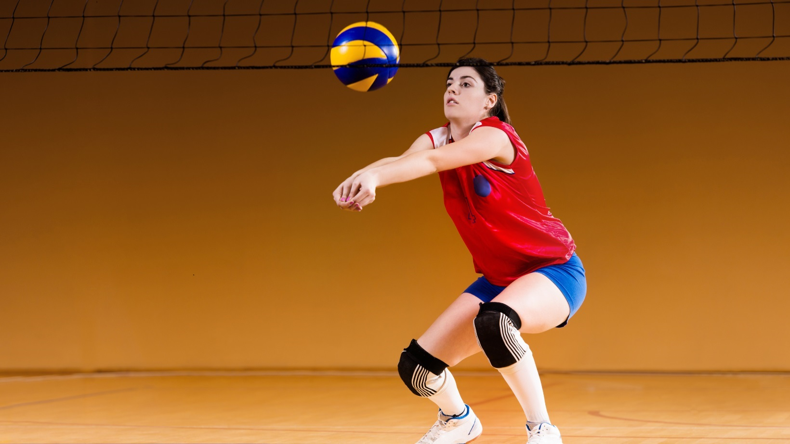

There are multiple different positions in the world of volleyball. One positon, being the "quarterback" of volleyball, is the setter. The setter is the person who places the ball just above the net for the hitter to spike. This requires the setter to use a special technique where the ball exits their hands quickly, without having too much spin. The technique consists of having your pointer fingers and thumbs be in a triangle shape when holding the ball, opening your hands like a door instead of slapping the ball, staggering your feet with your dominant foot in front, and having a slight bend in your knees. The setter should also square up to the pole when setting the outside hitter or opposite (right side hitter).

Passing is a very difficult position to play in volleyball, and there is a lot of pressure involved. Passers have the first contact on the ball in most cases. There are two positions in volleyball that specialize in passing. These two positions are liberos and defensive specialists. Libero's base is in the left back of the court, while DS's base is in the middle back of the court. Liberos are supposed to retrieve everything that falls short, which would be near or slightlmy behind the 10-foot line. DS's are in charge of receiving everything that is deep on either side of the court, meaning they need to run around a lot. During serve-receive, depending on how the coach likes the positioning, usually one of the front-row hitters pulls back to pass. Throughout the point as the opponent's side sends the balls back over, the setter is responsible to play some defense in the right back position.
To get a good hit requires a perfect pass and a perfect set. If the passer passes the ball straight to the setter's hands, the set is almost guaranteed to be perfect for the hitter to spike. Hitting is generally the 3rd contact, and is performed by a front row player. Hitter positions include Outside, Opposite, and Middle-Blocker. Generally, if the pass is not perfect, the setter is more likely to set the outside or opposite, because their bases are close to the pins. When the set is perfect, the setter is likely to set the middle. The hitting technique begins with the hitter in ready position on the 10 foot line, and in some cases, even farther back. Once the hitter realizes that they are being set, they approach by starting with their dominant foot, and taking 2, 3, or 4 steps (depending on the hitters preference). The hitter then reaches their dominant arm back, and follows the trajectory of their other arm to swing at the ball.
Blocking requires a lot of athleticism and skill to perform. All 3 front-row hitters are responsible for blocking in one way or another. If the hit from the other side of the court reaches the left side of the court, the outside and middle are responsible for blocking it together. If the ball is in the middle, the middle blocks it. Sometimes coaches will ask the other 2 hitters to help the middle to triple-block if the hit is very powerful. when the hit is on the right side of the court, the opposite and middle are responsible for blocking. They are called middle-BLOCKERS for a reason! The technique for blocking is to register which hitter is going to spike, approaching by taking a couple of steps and building up momentum in your arms, then jumping simultaneously with your fellow blocker, reaching your hands over the net, careful not to touch the net.